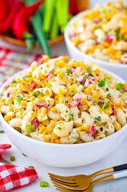

Home
Macaroni Salad Recipe

Description
This macaroni salad is a classic dish that combines tender macaroni pasta with a creamy dressing, fresh vegetables, and a hint of tanginess. It's perfect for picnics, barbecues, or as a side dish for any meal.
Ingredients
- 2 cups elbow macaroni
- 1 cup mayonnaise
- 1 tablespoon Dijon mustard
- 1 cup diced celery
- 1 cup diced bell pepper
- 1/2 cup chopped red onion
- 1/4 cup sweet pickle relish
- Salt and pepper to taste
- 1 tablespoon apple cider vinegar (optional)
Steps
- Cook the macaroni according to package instructions. Drain and rinse under cold water.
- In a large bowl, combine the mayonnaise, Dijon mustard, and apple cider vinegar (if using).
- Add the cooked macaroni, celery, bell pepper, red onion, and pickle relish to the bowl. Mix well to combine.
- Season with salt and pepper to taste. Adjust the dressing as needed.
- Chill in the refrigerator for at least 1 hour before serving to allow the flavors to meld.